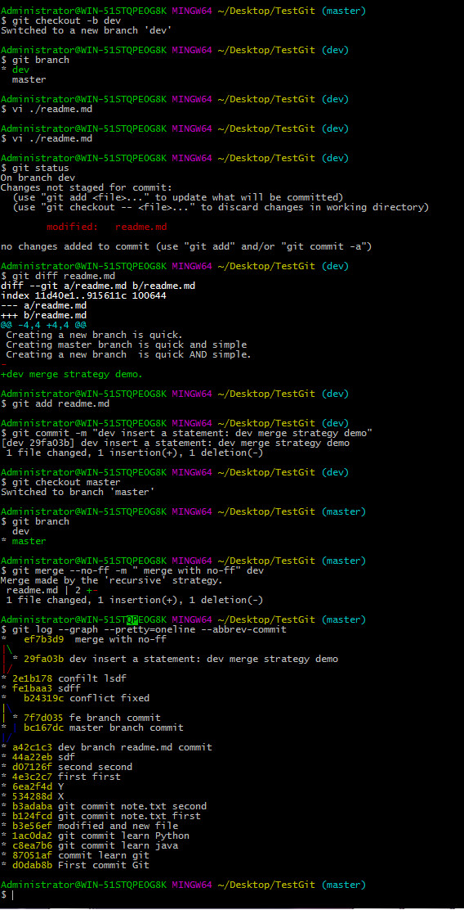
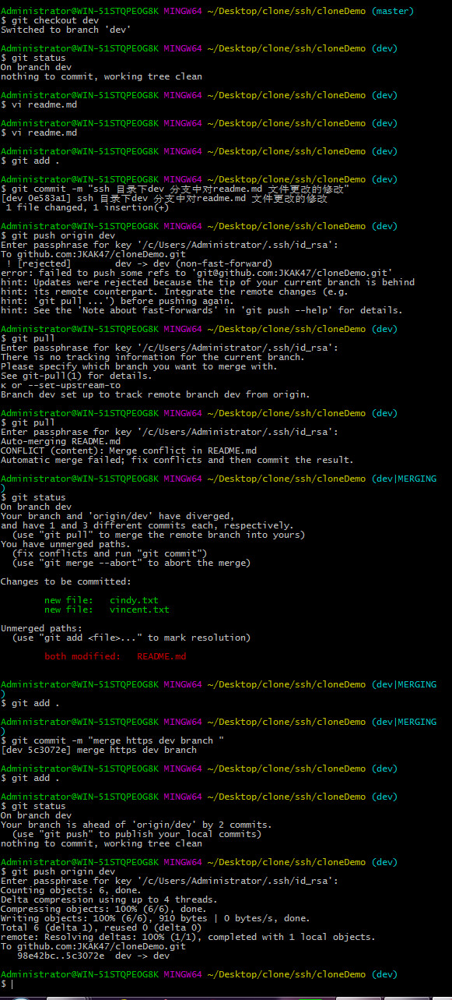

2、 Git中分支
2.1、 Git中分支管理
Git的分支是与众不同的，无论创建、切换和删除分支，Git在1秒钟之内就能完成！无论你的版本库是1个文件还是1万个文件。有了分支，你创建了一个属于你自己的分支，别人看不到，还继续在他自己的分支上正常工作，而你在自己的分支上干活，想提交就提交，直到开发完毕后，再一次性合并到原来的分支上，这样，既安全，又不影响别人工作。
Git把所有提交记录串成一条时间线，这条时间线就是一个分支。截止到目前，只有一条时间线，在Git里，这个分支叫主分支默认创建的，即master分支。HEAD严格来说不是指向提交，而是指向master，master才是指向提交的，所以，HEAD指向的就是当前分支。
创建与合并分支
首先，我们创建dev分支，然后切换到dev分支：
创建分支
-
git branch
没有参数，显示本地版本库中所有的本地分支名称。当前检出分支的前面会有星号。
-
git branch newname
在当前分支上新建分支一个名叫newname的分支。
-
git checkout newname
即切换到名叫newname的分支
-
git checkout –b newname master
命令将上面两个命令功能合并：在master分支上创建新分支newname分支并切换到该分支
git checkout -b dev 创建dev分支并切换到dev分支
git checkout命令加上-b参数表示创建并切换，相当于以下两条命令：
$ git branch dev 创建dev分支
$ git checkout dev 切换当前分支为dev
然后用git branch 命令查看当前分支

git branch命令会列出所有分支，当前分支前面会标一个*号。
然后，我们就可以在dev分支上正常提交，比如对readme.txt做个修改，加上一行：
Creating a new branch is quick.
然后在dev分支下进行git add ，git commit 操作提交到git仓库。

dev分支完成了工作后切换回master分支；git checkout master命令完成切换
git checkout master
切换回master分支后，再查看一个readme.txt文件，刚才dev分支下添加的内容不见了！因为那个提交是在dev分支上，而master分支此刻的提交点并没有变还是指向上次commit提交的地方：

现在，我们把dev分支的工作成果合并到master分支,git merge命令用于将指定分支合并到当前分支。合并后，再查看readme.txt的内容，就可以看到，和dev分支的最新提交是完全一样的。注意到上面的Fast-forward信息，Git告诉我们，这次合并是“快进模式”，也就是直接把master指向dev的当前提交，所以合并速度非常快。当然，也不是每次合并都能Fast-forward，我们后面会讲其他方式的合并。使用的命令如下图：
git checkout master 切换到master分支
git merge dev 合并dev分支内容到当前master分支
git branch -d dev 删除dev分支( git branch -D dev 强制删除dev分支)
git branch 查看当前分支

小结
Git鼓励大量使用分支：
查看分支：git branch
创建分支：git branch name
切换分支：git checkout name
创建+切换分支：git checkout -b name
合并name到当前分支：git merge name
删除分支：git branch -d name
2.2、 Git分支中的冲突
冲突来源：
-
第一种情况：当本地git仓库两个分支分别对同一文件做了修改会产生冲突,两条分支对同一个文件进行了修改，当一个分支试图合并到另一个分支时，Git不能自动合并的，称之为冲突(conflict)。解决冲突需要人工处理。
-
第二种冲突情况发生在远程git仓库中的A文件被小A更改并push到远程git仓库，我现在想推送到远程git仓库就不行了;因为你的小伙伴A的最新提交和你试图推送的提交有冲突解决办法: Git已经提示我们，先用git pull把最新的提交从origin/dev抓下来，然后，在本地git仓库合并解决冲突，再push到远程git仓储中：
命令执行流程：
下图是说明了我是怎么解决这个问题的
下面做一个实验：
准备新的fe分支，开始我们的新分支开发：在readme.md文件下增加一行，
Creating a new branch fe is quick AND simple.
然后在fe分支上面提交,命令执行如下：在fe分支下完成提交到本地git仓库

切换到master分支上面在readme.md文件后面新增一行
Creating master branch is quick & simple
然后提交

现在，master分支和fe分支各自都分别有新的提交，变成了这样：
这种情况下，Git无法执行“快速合并”，只能试图把各自的修改合并起来，但这种合并就可能会有冲突,下图显示解决方案：使用git merge 命令不能合并成功，同时通过git status命令查看冲突信息。图中命令提示可以使用 git merge --abort命令终止这个有冲突的合并，或者先解决冲突然后在提交(fix conflicts and run "git commit")

我们可以直接查看readme.md的内容：

Git用
<<<<<<<标记冲突开始，后面跟的是当前分支中的内容。HEAD指向当前分支末梢的提交。=======之后，>>>>>>之前是要merge过来的另一条分支上的代码。>>>>>>>之后的dev是该分支的名字。对于简单的合并，手工编辑，然后去掉这些标记，最后像往常的提交一样先add再commit即可。
参考
标记出不同分支的内容，我们修改如下后保存：
Creating master branch is quick and simple
再次提交

现在，master分支和fe分支变成了下图所示：

最后删除fe分支：git branch -d fe
小结：
当Git无法自动合并分支产生冲突时，就必须首先解决冲突。解决冲突后，再提交，合并完成。用git log --graph命令可以看到分支合并图。git log --graph --pretty=oneline --abbrev-commit查看详细合并情况
2.3、 Git分支管理策略
通常git合并分支时，如果可能，Git会用Fast forward模式，但这种模式下，删除分支后会丢掉分支信息。也就是通过
git log --graph --pretty=oneline --abbrev-commit
命令看不到合并的信息
现在我们做一个实验，创建一个dev分支并以dev分支对readme.md文件进行更改，比如加：dev merge strategy demo;修改后保存并提交再次切换回master分支合并刚才dev分支增加的内容;合并分支时，加上--no-ff参数就可以用普通模式合并，合并后的历史有分支，能看出来曾经做过合并操作流程如下图：
因为本次合并要创建一个新的commit，所以加上-m参数，把commit描述写进去。
git merge --no-ff -m "merge with no-ff http dev branch" dev 命令用于以'recursive' strategy.策略进行合并, --no-ff参数表示禁用Fast forward

可以看到，不使用Fast forward模式，merge后就像这样：

分支策略:
在实际开发中，我们应该按照几个基本原则进行分支管理：首先，master分支应该是非常稳定的，也就是仅用来发布新版本，平时不能在上面干活；那在哪干活呢？干活都在dev分支上，也就是说，dev分支是不稳定的，到某个时候，比如1.0版本发布时，再把dev分支合并到master上，在master分支发布1.0版本；你和你的小伙伴们每个人都在dev分支上干活，每个人都有自己的分支，时不时地往dev分支上合并就可以了。所以，团队合作的分支看起来就像这样：

这一节所讲主要为了可以在git系统中留下合并分支时的痕迹，加上--no-ff参数就可以用普通模式合并，合并后的历史有分支，能看出来曾经做过合并，而fast forward合并就看不出来曾经做过合并。
2.4、 Git bug分支（为修复Bug而创建的分支）
这里问题发生的前提是你在dev分支下面开发中...，突然有一个bug需要你修复并要立即合并到master分支，但是dev分支下的任务还没完成，意味着你dev分支还不能提交，所以不能在dev分支下修复这个bug。这个时候你需要退出dev分支然后去修复这个bug。而退出现场需要做一些保存现场的工作
实验流程
Git 提供一个stash命令，保存当前分支的修改内容，包括工作区和stage区的内容。
-
第一步：save现场（使用git stash命令）并切换到master分支创建一个新的分支issue-101进行修复bug

现在修复bug，需要把“Creating a new branc...”改为“Creating a new branch is quick AND simple and update issue 28/12/2016.”，然后提交：
-
第二步：修复bug,修复完成后，提交。

-
第三步：切换到master分支，并和master分支完成合并，最后删除issue-101分支
-
第四步：完成了bug的修复，并和master分支合并后;就可以恢复原来的dev分支了。进行进一步的开发。恢复现场

恢复现场使用的是git stash pop ，恢复的同时把stash内容也删了。
git stash apply命令进行恢复现场还需要 git stash drop来删除stash list中记录的stash记录
2.5、 Git feature分支（为未来功能而创建的分支）
软件需要添加一个新功能时，你肯定不希望因为一些实验性质的代码，把主分支搞乱了，所以，每添加一个新功能，最好新建一个feature分支，在上面开发，完成后，合并，最后，删除该feature分支。
假如你终于接到了一个新任务：开发代号为Spider的新功能，该功能计划用于下一代爬虫系统。
那么你现在开始工作，流程如下：dev分支下新建一个Spider分支，进行开发，切换回dev分支，准备合并到dev分支以进行测试
-
第一步:
在dev分支下面新建Spider分支并切换到Spider分支；
-
第二步：
在Spider分支下面开发，新建Spider.py文件进行编码，

-
第三步：
对刚才编码的文件提交到git仓库中。
-
第四步：
回到dev分支对spider分支内容合并到dev分支中，可以看到回到dev分支后原来目录下面的spider.py文件不见了。
-
第五步：
就是这节所要讲的内容，就是我对Spider分支的功能不要了，我强制删除Spider分支
git branch -D Spider
如果这个新功能获得了市场热烈的反馈，那么一切顺利的话，feature分支和bug分支流程是类似的，先合并到dev分支在合并到master分支，然后删除feature分支。
2.5、 Git 协作功能
当你从远程仓库克隆时，实际上Git自动把本地的master分支和远程的master分支对应关联起来了，并且远程仓库的默认名称是origin。要查看远程库的信息，用git remote：或者用git remote -v 获取更详细的信息。下图显示执行两个命令的不同
推送分支
推送分支就是将本地的git仓库上面的一个分支推送到远程git仓库(比如github)上面，推送时，要指定本地分支，这样，Git就会把该本地分支推送到远程库对应的远程分支上：
git push origin master 将本地master分支推送到远程git仓库
git push origin dev 将本地dev分支推送到远程git仓库并在远程git仓库创建dev分支
将一个dev分支修改的文件推送到github上面

这个时候github上面的master分支和dev分支就不一样了，github提示是否合并，这个时候我是在本地完成了dev分支合并到master分支并推送到github。
但是，并不是一定要把本地分支往远程推送，那么，哪些分支需要推送，哪些不需要呢？
-
master分支是主分支，因此要时刻与远程同步；
-
dev分支是开发分支，团队所有成员都需要在上面工作，所以也需要与远程同步；
-
bug分支只用于在本地修复bug，就没必要推到远程了，除非老板要看看你每周到底修复了几个bug；
-
feature分支是否推到远程，取决于你是否和你的小伙伴合作在上面开发。
总之，就是在Git中，分支完全可以在本地自己藏着玩，是否推送，视你的心情而定！
抓取分支
多人协作时，大家都会往远程git仓库master和dev分支上推送各自的修改，假如模拟一个你的小伙伴，可以在另一台电脑（注意要把SSH Key添加到GitHub）或者同一台电脑的另一个目录下克隆来模拟：通过
git clone git@github.com:JKAK47/cloneDemo.git
命令来获取到这个远程的git仓库，但是这种情况下你只能获取到远程git仓库的master分支。不能获取到其他分支。可以通过
git branch -a
命令可知本地分支有那些。
假如你的小伙伴要在dev分支上开发，就必须clone到远程origin的dev分支到本地，于是可以用下面这个命令checkout远程的dev分支到本地并起名为dev分支，并切换到本地的dev分支:
git checkout -b dev origin/dev
发生错误
fatal: Cannot update paths and switch to branch 'dev' at the same time.
Did you intend to checkout 'origin/dev' which can not be resolved as commit?
解决办法是：
git fetch origin
git checkout --track origin/dev
参考链接
StackOverflow
Difference between git checkout --track origin/branch and git checkout -b branch origin/branch
下图记录了错误解决过程
关于这两个命令的不同
git checkout -b mybranch origin/abranch will create mybranch and track origin/abranch
git checkout --track origin/abranch will only create 'abranch', not a branch with a different name.
然后你的小伙伴就可以在dev分支上面做修改，然后push到远程git仓库。第一次推送过程中他提示你填写你的github账户名和登入密码
git push origin dev 推送当前的dev分支到github 的远程git仓库
Username for 'https://github.com': 填入账户名
另外弹框输入对应账户登入密码
可以看到小伙伴A(在https目录下)对dev分支进行了多个层次的修改然后推送到origin/dev分支下面
假如现在在ssh目录下工作的小伙伴B也有更新的请求，请求更新到dev分支下面。因为小伙伴A也对readme.md文件进行了修改并push到github下origin/dev分支，小伙伴B对readme.md文件也进行了更改。这个时候如果小伙伴B也进行push操作的话不会成功。
推送失败，因为你的小伙伴A的最新提交和你试图推送的提交有冲突，解决办法也很简单，Git已经提示我们，先用git pull把最新的提交从origin/dev抓下来，然后，在本地合并，解决冲突，再推送：
git pull也失败了，原因是没有指定本地dev分支与远程origin/dev分支的链接，根据提示，设置dev和origin/dev的链接;使用下面命令
git branch --set-upstream dev origin/dev
再次git pull 就成功了，然后git push origin dev 成功push到github上面

因此多人协作的工作模式通常是这样：
-
首先，可以试图用git push origin branch-name推送自己的修改；
-
如果推送失败，则因为远程分支比你的本地更新，需要先用git pull试图合并；
-
如果合并有冲突，则解决冲突，并在本地提交；
-
没有冲突或者解决掉冲突后，再用git push origin branch-name推送就能成功！
如果git pull提示“no tracking information”，则说明本地分支和远程分支的链接关系没有创建，用命令git branch --set-upstream branch-name origin/branch-name。这就是多人协作的工作模式，一旦熟悉了，就非常简单
小结：
-
查看远程库信息，使用git remote -v；
-
本地新建的分支如果不推送到远程，对其他人就是不可见的；
-
从本地推送分支，使用git push origin branch-name，如果推送失败，先用git pull抓取远程的新提交；
-
在本地创建和远程分支对应的分支，使用git checkout -b branch-name origin/branch-name，本地和远程分支的名称最好一致；
-
建立本地分支和远程分支的关联，使用git branch --set-upstream branch-name origin/branch-name；
-
从远程抓取分支，使用git pull，如果有冲突，要先处理冲突